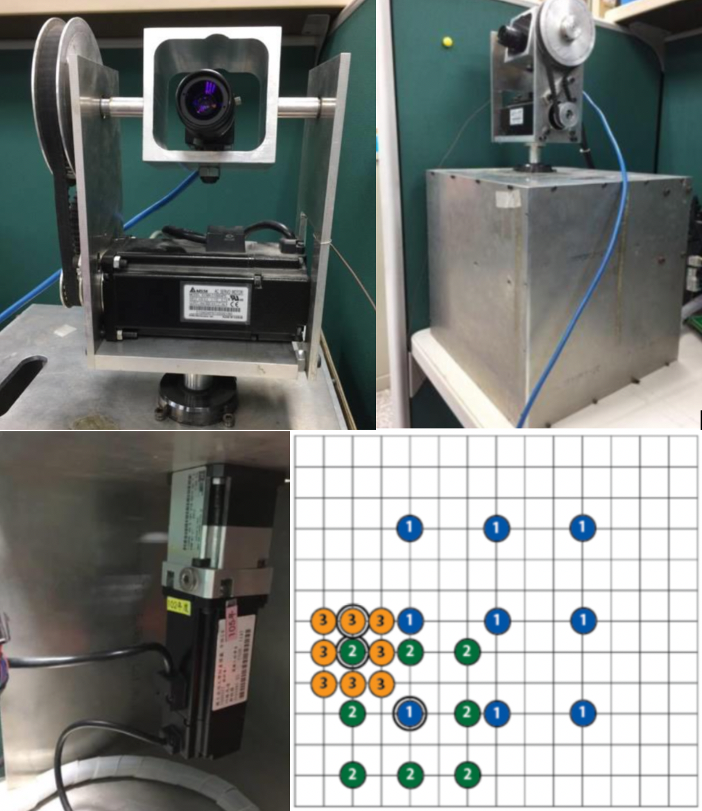
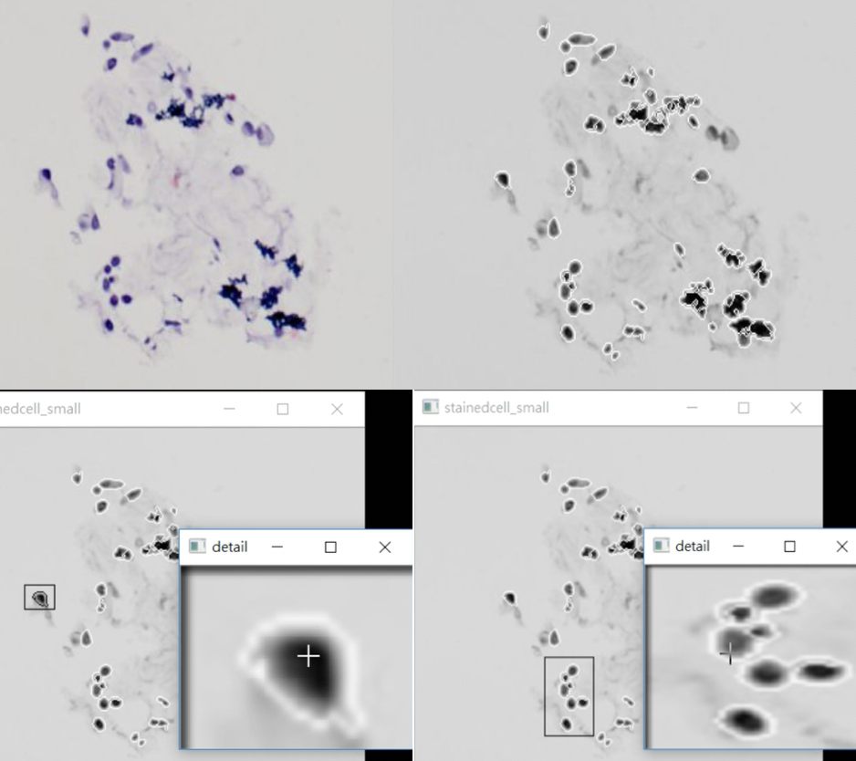

About Me
I am a CS master student at Dartmouth College starting in Fall 2019. Previously, I received my BS in Electrical Engineering at National Cheng Kung University in 2018. After that I was a research assistant at National Chiao Tung University, where I participated in many amazing HCI projects with Prof. Da-Yuan Huang and Prof. Yung-Ju Chang.
My research interest lies in developing novel input/output techniques by integrating hardware and software. Specifically, I try to 1) develop Haptic devices, 2) elevate expressivity of input techniques in 2D/3D space and 3) exploring how Human understand and interact with AI
PUBLICATIONS

projects

Undergraduate Project
National Cheng Kung University 2018
Using Three-Step-Search to Realize Tracking System on the Pan-Tilt Platform
Advised by Prof. Ming-Yang Cheng

Final Project in Image Processing
National Cheng Kung University
GUI Toolkits For Rapidly Processing Biopsy Image
Advised by Prof. Pau-Choo Chung
NEWS
2019/8/21 arrive in Hanover
2019/7/30 website open!
EDUCATION
-
MS in Computer ScienceDartmouth College2019 - 2021 (expected)
-
BS in Electrical EngineeringNational Cheng Kung University2014 - 2018
EXPERIENCE
-
Research AssistantNational Chiao Tung University2018 Sep - 2019 Aug
-
Research InternIndustrial Technological Research Institute2018 summer